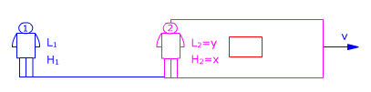
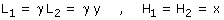
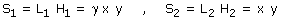
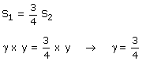
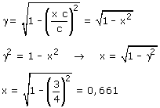
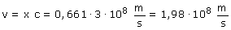

El rectángulo representa un recinto que se mueve
respecto al observador 1 con velocidad v  Observador 1: Observador 2: Aplicando la conversión de longitudes resulta:  (Recuerda que solo se modifican las dimensiones paralelas a la dirección del movimiento) El área del rectágulo vista por cada uno de los observadores será:   Conociendo γ se puede calcular la velocidad de la nave. Este cálculo resultará más fácil si expresamos la velocidad como un porcentaje de la velocidad de la luz: v =x·c  La velocidad del rectángulo debrá ser un 66.1% de la velocidad de la luz  |